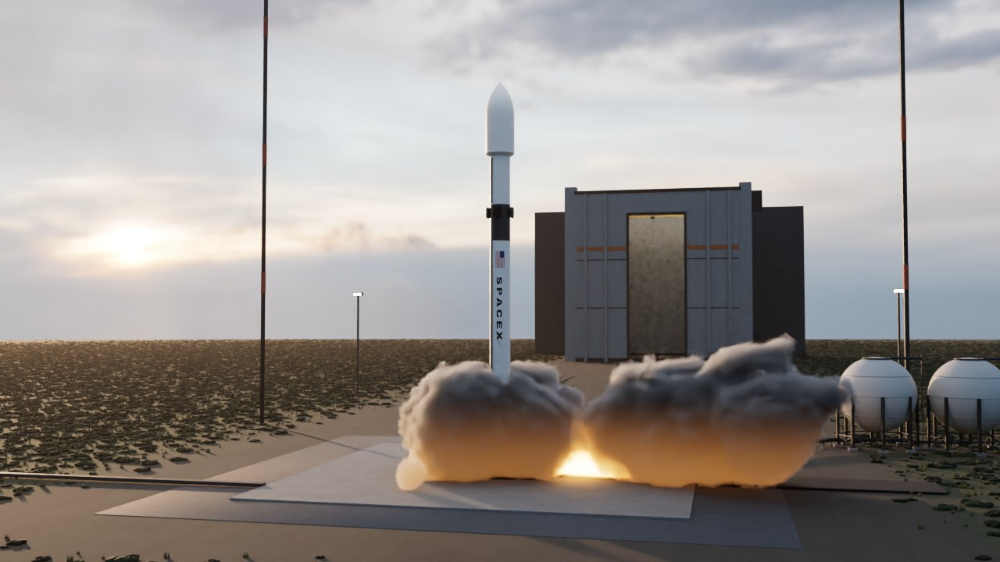
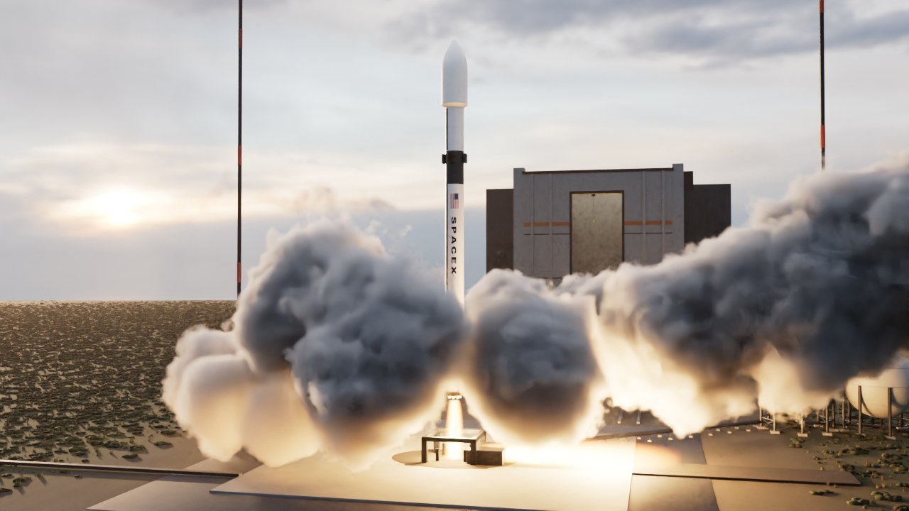
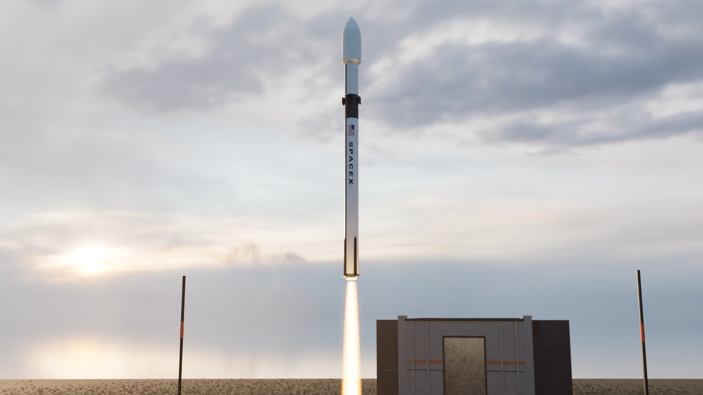

Seção 3 — decolagem (prévia)
Quadros de teste em resolução média do render Cycles, ainda não no vídeo. Voltar ao protótipo



Quadros de teste em resolução média do render Cycles, ainda não no vídeo. Voltar ao protótipo


